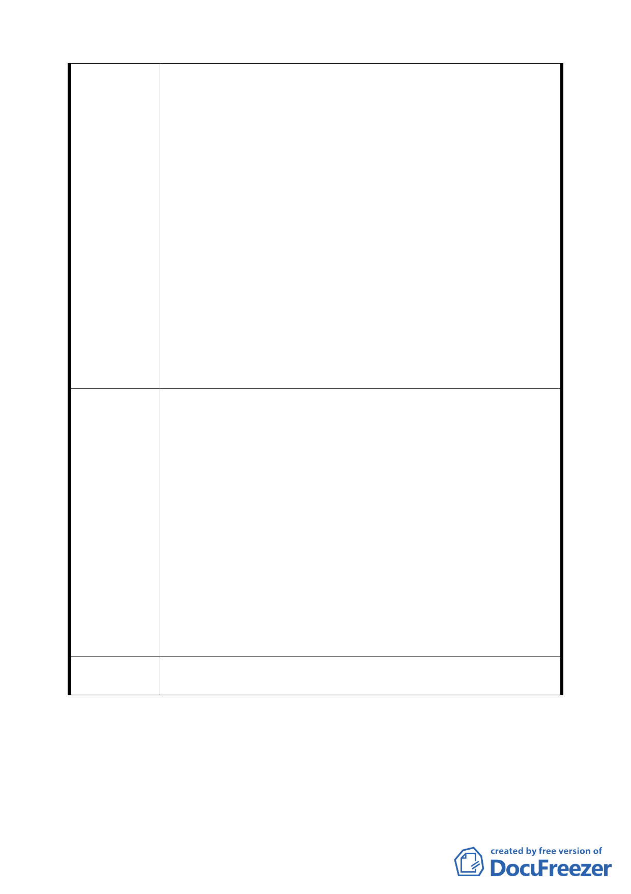

建議辦法
（原訂提送日期為 94 年 11 月 30 日），而僅以細部計畫
主文「經本府交通主管機關評定設置停車格數」之方式
替代公共審議，有失周延。
（3）計畫區域為本市大眾運輸系統之中樞，接駁、轉乘行為
頻繁，臨時停車行為涵括一般小客車、公車、計程車、
貨車等運輸工具，其所需路段長度暨轉乘動線皆應細緻
規劃。
4.為撙節中正機場捷運工程公共預算支出，提案單位乃導入
聯合開發模式誘導民間資金參予 C1、D1 基地開發，除期待
計畫區域能留存國家門戶意象之永久典範外，亦期待捷運
工程地下化所需資金自給自足、無需公務部門額外支應；
爰此，基地開發所衍生之各項環境衝擊成本亦應由開發業
者自行吸收，方符合聯合開發模式原始美意及維護本府權
益，本次提案單位未能藉由都市設計管制手段明快處理
C1、D1 開發後衍生之道路、停車容受力等交通衝擊，僅迫
於開發時程單純定義土地使用，為未來可能的畸型發展及
爭議預留變因，應請再思量妥為研析為宜。
1.考量計畫區域未來即將興建超高量體、產生大量停車需求
之建築物，本局建議於都市計畫階段即由提案單位提出交
通影響評估報告，並作為細部計畫書附件內容辦理公開展
覽，以利各方先進預先審驗計畫區域道路系統、停車規劃
內容。
2.建議提案單位應正視交通客觀數據呈現之現實情勢，並調
整計畫書交通規劃相關內容。
3.建議本案附件「都市設計管制要點」內容，應針對轉乘、
臨停所需路段長度暨轉乘動線有更多著墨與闡明，俾利設
計者依循，並利當地公共環境品質。
4.本案業奉 市長裁示成立專案聯繫會報合議審定相關書圖
暨政策，開發基地既需面對停車格設置不足之窘境，理應
先於交通小組議定解決方案後再行擬訂細部計畫較為妥
適。
委員會決議 同決議一。
討論事項四
案名：臺北市都市計畫容積移轉審查許可條件（草案）
一、提案單位：台北市政府
二、法源依據：都市計畫容積移轉實施辦法
二三